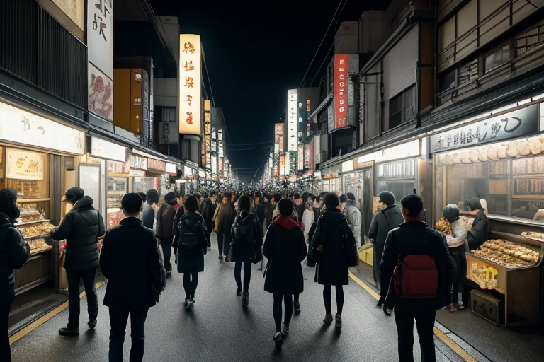
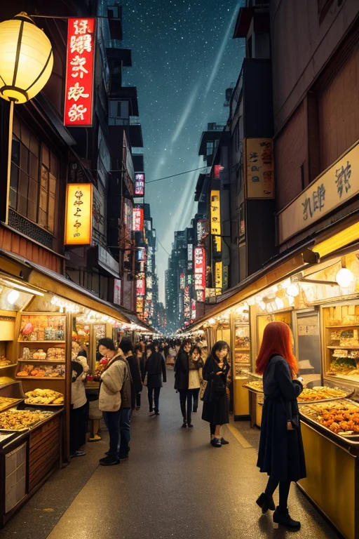

第一章 現実の大阪
あなたはまだ気づいていない。この土地にも、王がいることを。
道頓堀のネオンは、昼間から人々の欲望を照らし出す。金の流れは川のように絶えず、笑い声と怒鳴り声が混ざり合う。たこ焼きの鉄板から立ち上る湯気の向こうで、商談は瞬時に成立し、また破談する。ここではすべてが速度を持ち、すべてが取引の対象だった。笑いさえも。
通天閣の展望台から見下ろす新世界の雑踏。その活気の底には、常に微かな歪みが潜んでいた。商いの熱気が過剰になれば、それは無言の圧力となり、人々の心にひび割れを生む。かつて大坂の陣で灰燼に帰したこの街は、商魂という名の再生力で幾度も甦り、その度に新たな歪みを内包してきた。
王はその歪みを観測していた。赤と金の紋章を纏い、人の波に紛れて。彼の役目は、沸騰寸前の熱を一度かき混ぜ、破裂を回避させること。災害を消すのではなく、ほんの少し、その衝撃を分散させることだけが許されていた。
第二章 歪みの兆候
通天閣のネオンが、曇り空の下で鈍く光っていた。平日の昼下がり、新世界の路地は、いつもの賑わいとは少し違う。客引きの声に張りがなく、たこ焼きを焼く鉄板の音だけが、妙に耳に残る。人流データの微細な乱れ、消費の波長に生じた僅かなノイズ。これが歪みの兆候だった。
王は串カツ屋のカウンターに座り、粉をまぶさずに揚げた一貫を口に運んだ。油の音の裏で、妖精ナニワラが囁く。「あの企業、リストラの噂が流れてから、この界隈の昼酒が三割増しですわ。笑いでごまかすにも、限度ってものがありますねえ」。その言葉に、王は微かに頷いた。人々の不安は、見えない圧力となり、街の地盤そのものを蝕み始めていた。かつて大坂の陣で焼け野原となったこの地は、商いと再生を繰り返すうちに、今度は「熱気の枯渇」という歪みを孕んでいた。
笑いは、この場合、武器だろうか。それとも、不安を覆い隠すだけの盾か。王は客の一人が漏らしたため息を聞きながら、その問いを胸に沈めた。彼に許されたのは、爆発寸前の鍋の蓋を、ほんの一瞬、浮かせることだけだ。

第三章 王の葛藤
道頓堀の喧噪は、欲望の波のようだった。金が動き、人が集い、笑いが飛び交う。その全てが、この街の熱量であり、同時に歪みの源でもあった。オオサカリア・リベルは、人混みに紛れながら、流れる感情の密度を感じ取る。焦り、野心、刹那的な喜び、そしてその裏に潜む漠然とした不安。かつて大坂の陣で灰燼に帰したこの地は、商いという形で膨大なエネルギーを再生させてきた。しかし、そのエネルギーが今、過剰な熱となり、地盤の微細なひずみを増幅させようとしていた。
彼は手をかざした。目には見えない、人々の熱気が織りなす「流れ」を、ほんのわずか、滞らせるように調整する。笑いの妖精リベルタとナニワラが、怒気や焦りを笑いの種に変え、分散させていく。だが、王の心にはもやがかかっていた。この調整は、爆発を防ぐための安全弁に過ぎないのか。それとも、人々が自らの欲望と向き合うための、ほんの少しの「間」を生み出しているのか。
笑いは、不安を和らげる盾か。それとも、現実と真正面から向き合うための武器か。彼は未だ答えを持たなかった。ただ、鍋の蓋が吹き飛ぶ寸前の、その一瞬を、今日もまた繰り返し作り出していた。

第四章 妖精との対話
通天閣の展望台から、新世界の雑踏を見下ろす妖精ナニワラは、いつもより静かな口調で言った。
「王様、商いの本質は交換やないで。『待つ』ことや。」
彼女は、串カツ屋の長い列、掘り出し物を探す客の目、交わされる駆け引きの全てを指さした。
「金を払うて物を待つ。時間をかけて信頼を待つ。欲望が叶うその一瞬を、みんな待ってるんや。その待ち時間にこそ、歪みが溜まる。焦りと期待が、鍋の蓋を押し上げる。」
王は黙って聞いた。妖精は続ける。
「うちらの笑いはな、その蓋が飛ぶ前に、『待てたなぁ』って自分を褒める『間』を作るんや。盾やったら、ただ蓋を押さえつけるだけや。武器やったら、蓋をぶん殴って壊すだけや。どちらでもない。ただ、蓋が飛ぶか飛ばんかの、ほんの一呼吸分、景色を変えるんや。」
王は、地面の下でゆっくりと蓄積する歪みを感じた。妖精の言葉は、調整の本質を突いていた。彼は何も消せない。ただ、爆発の「直前」を、ほんの少しだけ「直後」にずらし、その一瞬の「間」に、別の選択肢を忍び込ませるだけなのだ。
第五章 微調整と余韻
道頓堀の雑踏は、いつもと同じ密度で流れていた。王は人混みの波間を、目立たぬ一市民として歩く。彼の目には、人々の感情の「熱」が色となって見える。焦り、苛立ち、小さな怒りの赤い粒が、無数に漂っている。
地面の下、歪みが臨界点に近づいていた。巨大な力が、今にも解放されようとしている。王はそれを止められない。彼にできるのは、その解放の「瞬間」を、ほんの少しだけ調整することだけだ。
彼は息を吸った。妖精たちの声が体内で響く。「行くで、王！」「ほな、いっくでー！」
王は指を軽く弾いた。それは、巨大な時計の秒針を、ほんの一歯、遅らせるような行為だった。同時に、彼は人混みの中の「偶然」を微調整する。転びかけた老人の脇に、たまたま手を差し伸べる学生の軌道を半歩修正する。苛立ちから喧嘩になりかけた二人の間に、看板がたまたま倒れ、一瞬の間を作る。赤い粒は、完全には消えない。ただ、衝突のタイミングがずれ、拡散する。
地面が唸った。震度５強の揺れが街を襲う。看板が落ち、ガラスが割れ、人々の悲鳴が上がる。しかし、それは「震度６弱」にはならなかった。津波の第一波は、計算より十七秒遅れて到達した。その十七秒の間に、海岸の老人は孫の手を引いて、たまたま目に入ったコンクリートの塊の陰に駆け込んだ。
混乱のさなか、誰も気づかない。ほんの少しのずれ、ほんの一瞬の間。王は雑踏の片隅に佇み、静かに息を整えた。笑いは、武器でも盾でもなかった。それは、絶望と絶望の狭間に、ほんの一呼吸分の「間」をこしらえる、微かな風のようなものだ。彼はその風を、今日も街に放った。
あなたの町にも、王がいる。